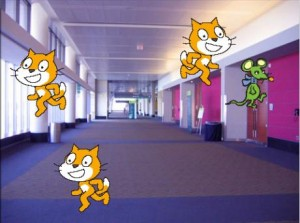

MITで開発されたScratchという教育用プログラミング環境を使ってワークショップを行います。午前中はScratchの入門編ワークショップ、午後はScratch経験者を対象に中級者向けワークショップという二本立てでお送りします！
なお、本企画はイベント「オープンソースカンファレンス2013 Tokyo/Fall」の一企画となっております。イベントでは様々なIT系のコミュニティ様の出展等もありますので、合わせてお楽しみください！
時間：10:00 ~ 12:30（午前中）
プログラミングってなんでしょう？アメリカで開発されたScratchというソフトを通して、プログラミングを体験してみよう。当日はネコとネズミが追いかけっこをする簡単な鬼ごっこゲームをつくります。こどもでもおとなでも、マウス操作さえできれば参加可能です！
時間：14:00 ~ 17:00（午後）
午後のワークショップは、アクションゲームを作るときに重要となる「ジャンプ」について。「いい感じ！」なジャンプをつくるにはどうすればいいかな。コツを伝授します。ワークショップ後半では実際にアクションゲームを作ってみよう。こちらのワークショップでは、Scratchに触ったことのある人を対象に行ないます。プログラミングが初めての方はご相談ください。
お手数ですが以下のリンク先より申込みをお願いいたします。
ものづくり寺子屋と京都クリエイティブワークショップは、「小・中学生にコンピュータの楽しさを実感してもらう」ことを目的として活動している団体で、主に大学生によって構成されています。
mntr.ws「あっと」gmail.com（スパム対策のため、「あっと」を@に変えてください）